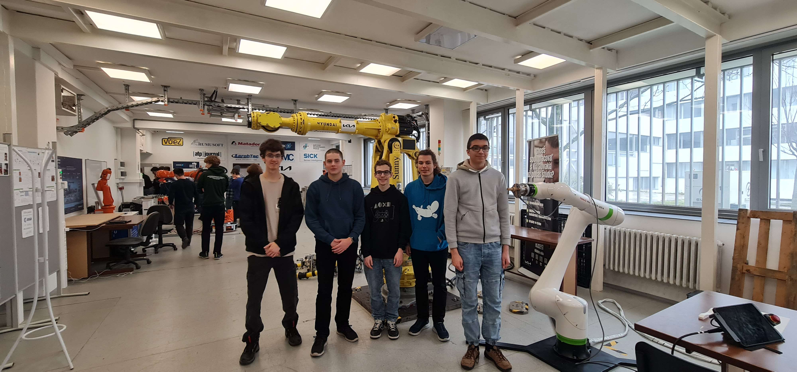

Our CanSat Workshop at FEI STU
On 14.3.2025, our team took part in a focused and insightful CanSat workshop hosted at the Faculty of Electrical Engineering and Information Technology (FEI STU). It was a valuable day packed with practical knowledge, helpful advice, and inspiring conversations with both experts and fellow teams.
The day began at 9:00 with a short welcome, followed by three engaging lectures that covered key aspects of our CanSat journey. The first talk dove into communicating with the CanSat, offering technical tips and examples to help us improve data transmission. The second lecture, how to write a successful project, was especially helpful—it gave us clear guidance on structuring and writing our documentation, something that's crucial not only for the competition but also for presenting our work professionally. Finally, we learned about preparing for the semi-finals and finals, gaining insight into what judges look for and how to showcase our project effectively under time pressure.
After the lectures, we were treated to a guided tour of the FEI STU laboratories—a highlight of the day. Seeing real research environments and equipment in action gave us a deeper appreciation for the work happening at the faculty, and maybe even sparked some ideas for our own development. Here’s a glimpse of our members together with a member of another team from our school during the lab tour!
The morning wrapped up with a relaxed discussion and refreshments session, where we had the chance to network, ask questions, and exchange thoughts with other teams and professionals in the field.
We left the workshop more prepared, more inspired, and definitely more excited for what’s ahead. Big thanks to the organizers at FEI STU for creating such a valuable experience!